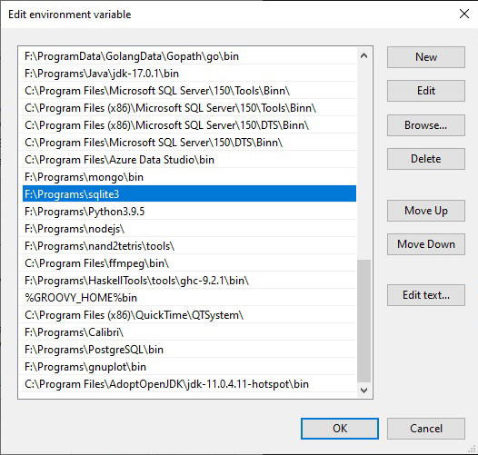
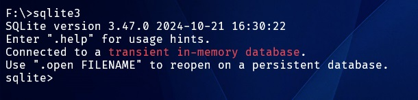
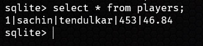

Basics
Installation
- Go to sqlite.org
- Download sqlite-tools-win-x64 zip file.
- Unzip it in any folder.
- Add path to the sqlite3 folder in environment variable. 
- Documentation for command line shell. Sqlite Documentation
Using sqlite shell
The SQLite project provides a simple command-line program named sqlite3 (or sqlite3.exe on Windows) that allows the user to manually enter and execute SQL statements against an SQLite database or against a ZIP archive. This document provides a brief introduction on how to use the sqlite3 program.
Start the sqlite3 program by typing "sqlite3" at the command prompt, optionally followed by the name the file that holds the SQLite database (or ZIP archive). If the named file does not exist, a new database file with the given name will be created automatically. If no database file is specified on the command-line, a temporary database is created and automatically deleted when the "sqlite3" program exits.
On startup, the sqlite3 program will show a brief banner message then prompt you to enter SQL. Type in SQL statements (terminated by a semicolon), press "Enter" and the SQL will be executed. 
Sample database
Create a database
sqlite3 cricket
create table players(id integer primary key,
firstName text,
lastName text,
matches integer,
average decimal(10,2)
);
Insert Query
insert into players(firstName,lastName,matches,average)
values('sachin','tendulkar',453,46.84);
Select Query
select * from players;
Dot Commands
Query Schema
-
Get list of all Tables
.tables
-
Get schema of all tables
.schema
-
Show schema of specific table
.schema players
Output format
- Change the output format. Default list
- More information about changing formats
.mode format_type
| ascii | box | csv | column | html | insert | json |
| line | list | markdown | quote | table | tabs | tcl |
Writing output to files
By default, sqlite3 sends query results to standard output.
You can change this using the ".output" and ".once" commands. Just put the name of an output file as an argument to .output and all subsequent query results will be written to that file.
Or use the .once command instead of .output and output will only be redirected for the single next command before reverting to the console.
Use .output with no arguments to begin writing to standard output again.
-
Write sql output to JSON file.
sqlite3 cricket .mode json .output players.json select * from players;players.json[ { "id": 1, "firstName": "sachin", "lastName": "tendulkar", "matches": 453, "average": 46.84 }, { "id": 2, "firstName": "virender", "lastName": "sehwag", "matches": 350, "average": 26.66 } ]